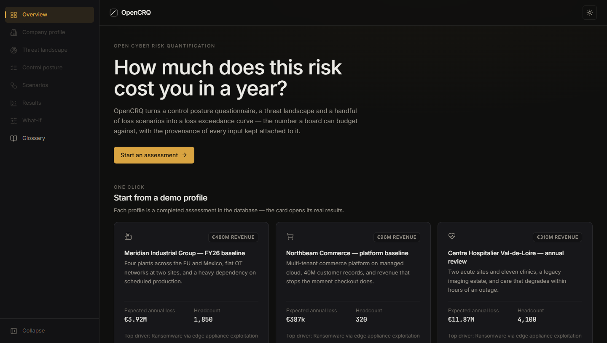
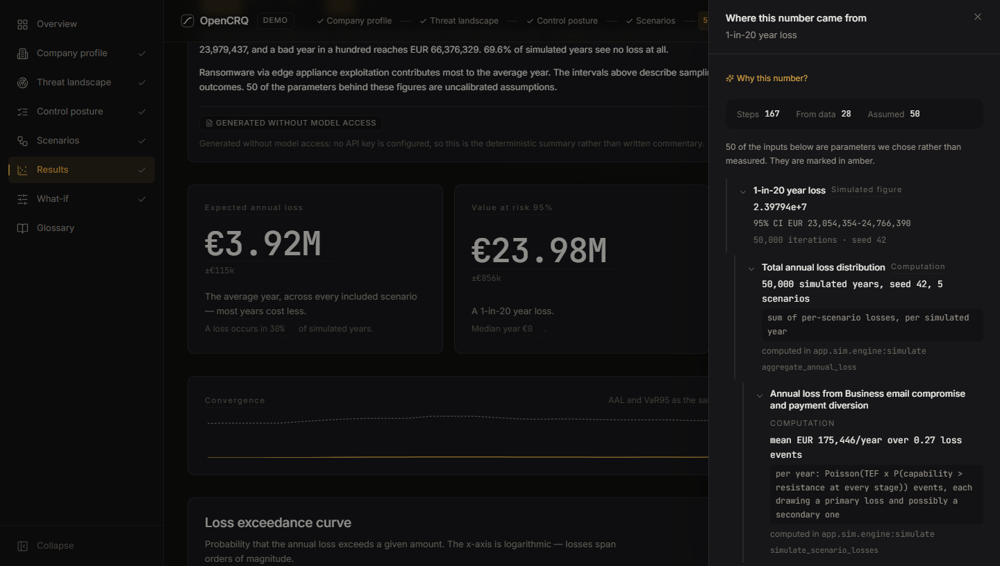
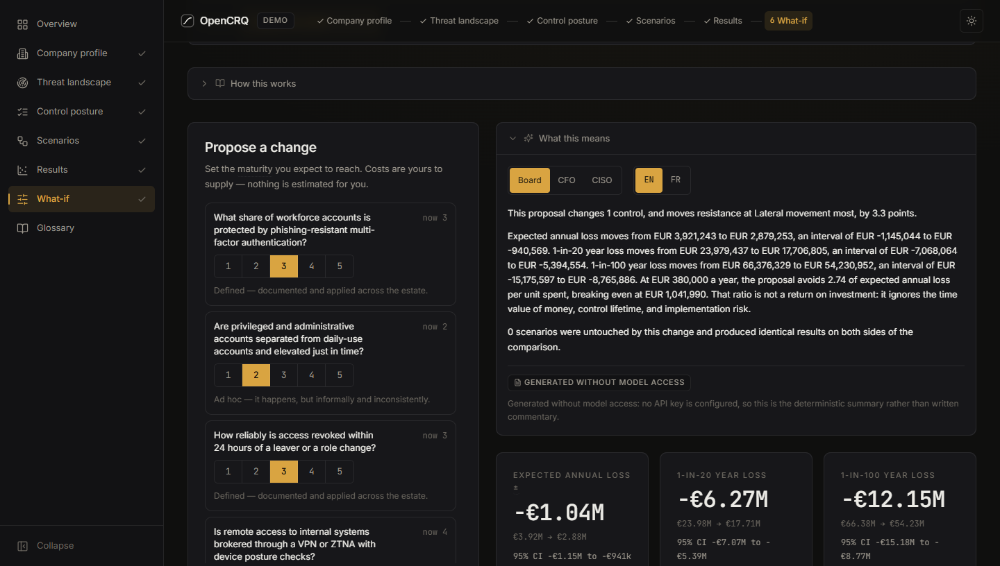
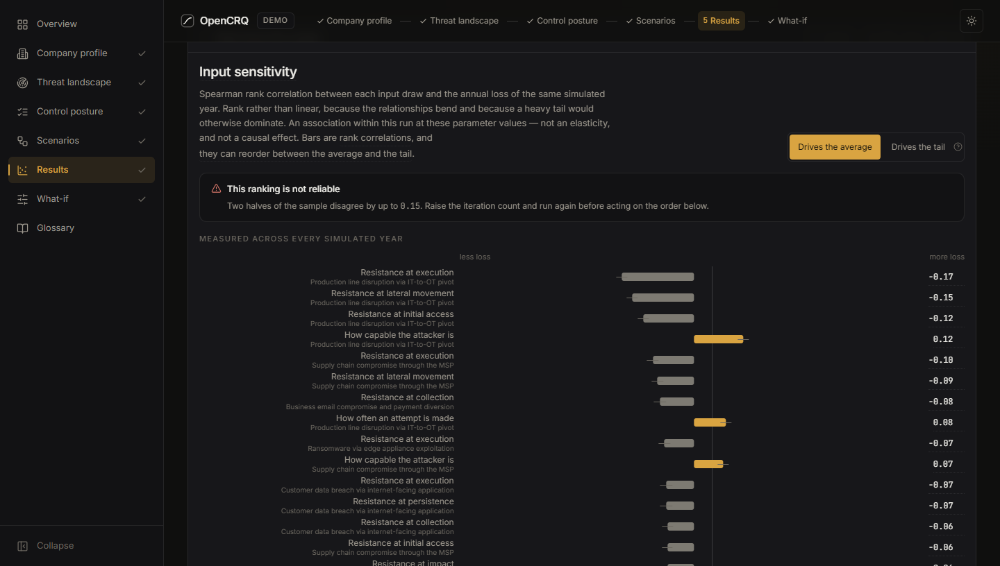
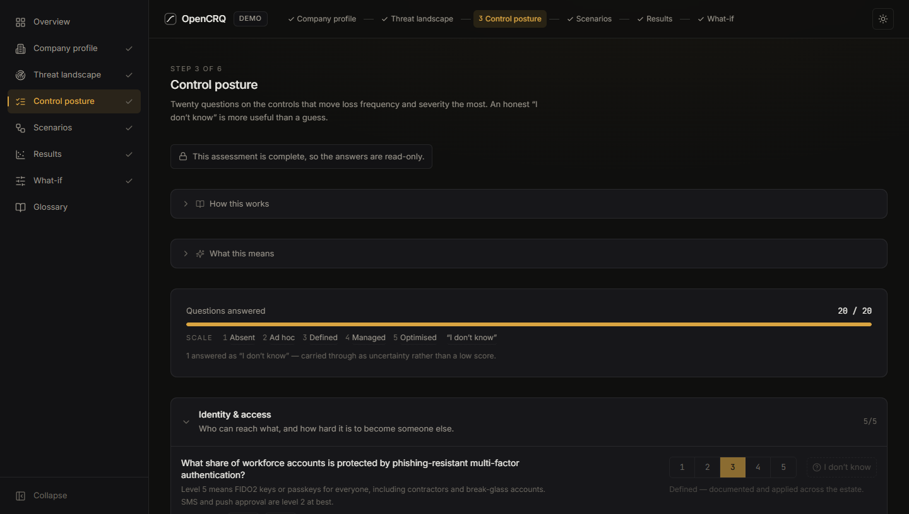
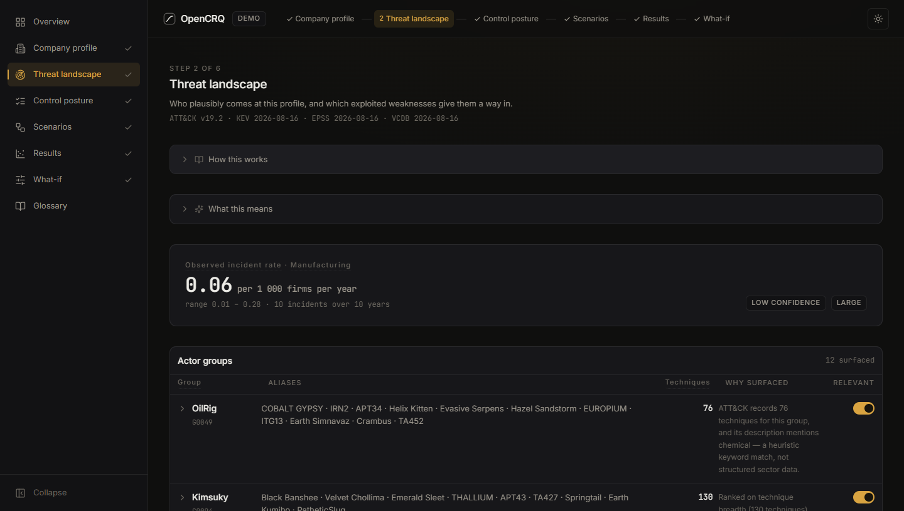

One-click demos
Three fictional companies, already simulated, so a visitor sees results in one click.
Case study · Risk modelling web app
How much could a cyber attack cost you in a bad year? And where did that number come from?

The loss curve for a fictional demo company.
The 30-second version
OpenCRQ turns a company profile and a 20-question assessment into an annual loss distribution: the expected loss and the 1-in-20 and 1-in-100-year losses. Click any number to see where it came from, down to dated source data or a named assumption.
The problem
Many cyber risk tools multiply single numbers for frequency and cost. That gives an average, says little about the bad years, and hides which inputs are guesses.
What I built

Three fictional companies, already simulated, so a visitor sees results in one click.

Click a figure to see its full derivation, with uncalibrated assumptions in amber.

Improve a control and see the change in loss, with 95% intervals, against its yearly cost.

Inputs ranked by impact, with a warning when the ranking isn't reliable.

"I don't know" widens the uncertainty instead of counting as a middle score.

Dated threat data, low-confidence rates marked, and a plain-language summary in English or French.
How it's built
Public data is saved offline as dated snapshots. A Bayesian network and a vectorised Monte Carlo engine simulate each year; nothing is trained, and the probabilities are flagged as uncalibrated.
1 · Ingestion (offline)
MITRE ATT&CK, CISA KEV, EPSS, VCDB and Eurostat, saved as dated Parquet snapshots.
2 · Model
A Bayesian network turns control answers into distributions.
Monte Carlo engine · NumPy
3 · Provenance
Records where each parameter came from.
3 · Explanations
An optional LLM or a template writes the text; every number is checked.
4 · API & UI
FastAPI and React, typed from one schema.
The hard parts
01
Two independent runs mostly measure random noise. What-if reuses the baseline's random draws, cutting that noise at least 5×.
02
The LLM does no maths. A verifier checks every number in its text, and anything unverified falls back to a template.
03
Profiling cut run time 11.5% with bit-identical results. I rejected a faster sampler that moved the 1-in-20-year loss by 1%.
How I worked
What I learned
What's next
I'm looking for a full-time job (CDI) in software or AI engineering.